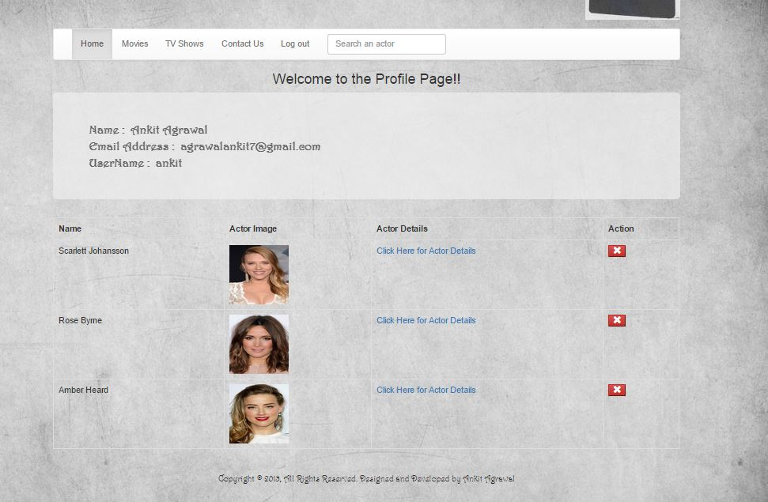

Summary of the Page : This is the Profile page of the project. The .js file linked to this page makes an Ajax call to retrieve data from MongoDB.On the profile page there is logout button that logs out the user. Also there are tabs to navigate to different pages. On profile page other details about the user is displayed. Then the favourite actors of the user are displayed along with URL to their profile details.Also if the user wants to delete a particular actor he can do that as well.Also the header contains all the tabs and footer contains the copyright information
Screenshot of the Page :
